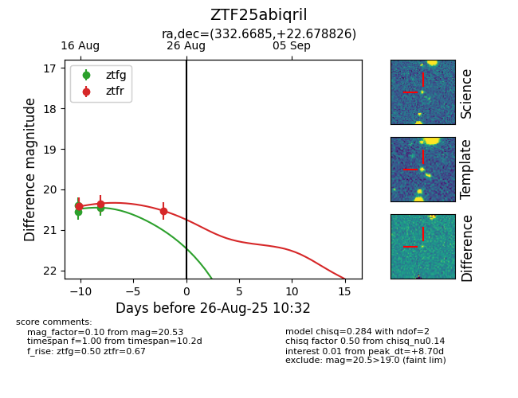

Target ZTF25abiqril at 2025-08-26 10:32, see:
FINK: fink-portal.org/ZTF25abiqril
Lasair: lasair-ztf.lsst.ac.uk/objects/ZTF25abiqril
ALeRCE: alerce.online/object/ZTF25abiqril
alt names
ZTF25abiqril (ztf,fink)
coordinates:
equatorial (ra, dec) = (332.6685,+22.67883)
galactic (l, b) = (81.0711,-26.83883)
photometry
last ztfg=20.44, ztfr=20.53
3 ztfg, 4 ztfr detections
